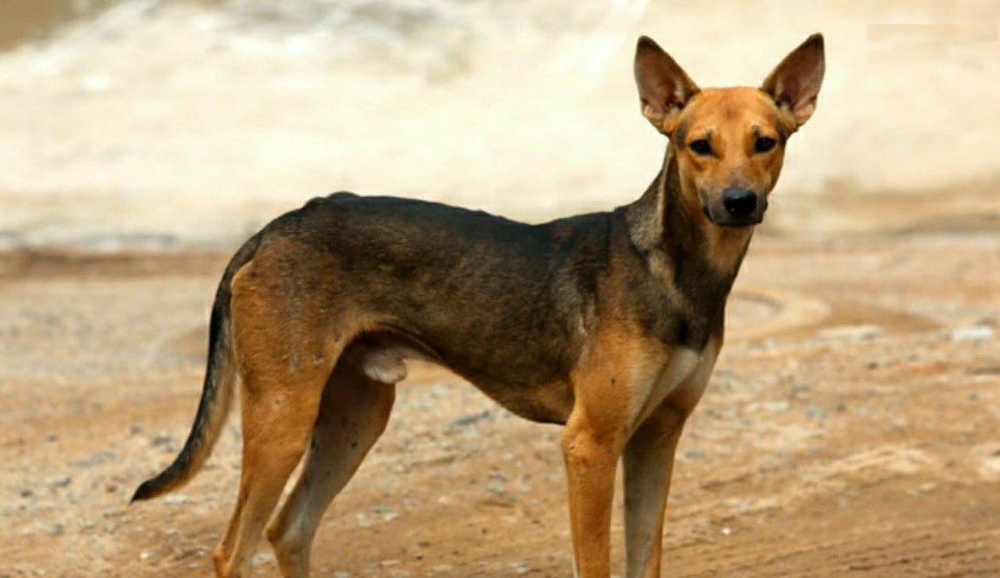
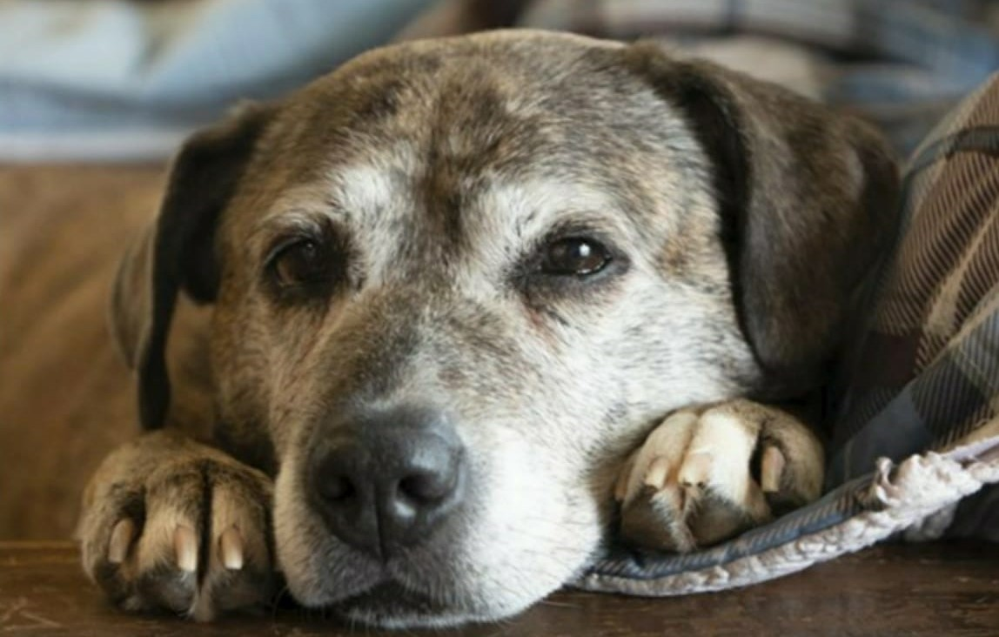

There's a reason dogs are known as man's best friend, they're
adorable, loyal, and simply the best. But instead of visiting your
local pet store, there are...

Why you should adopt an Indian Pariah Dog?
Before knowing why to adopt an Indian pariah dog one must know what is
actually an Indian pariah dog. Indian pariah dog has many names such
as South Asian...
Why you should adopt a dog loitering in the streets?
There is a fundamental difference between buying a dog and adopting
one, when you are buying a dog you are actually weighing it against
some...

Why you should adopt a senior dog?
What comes to our mind when we think of getting a dog? A puppy perhaps
or even a young dog. We tend to ignore senior dogs due to various
misconceptions...